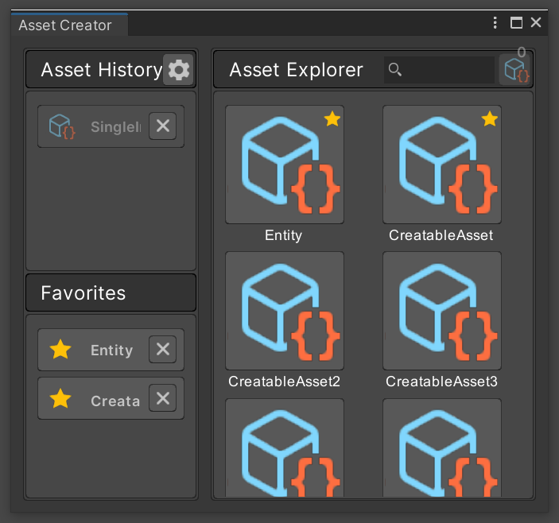
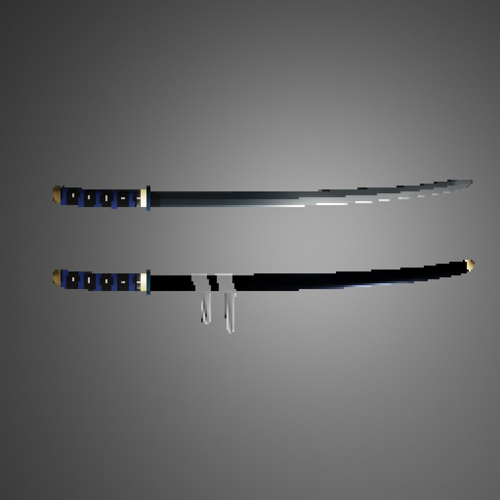
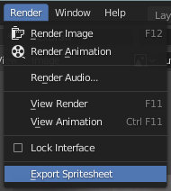
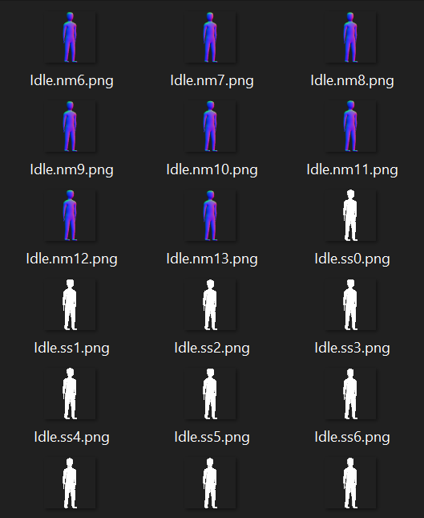
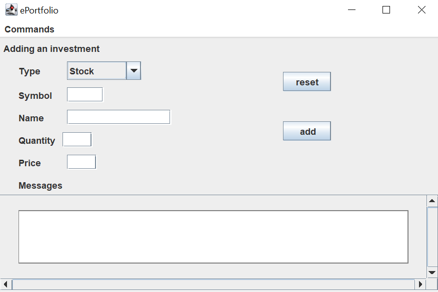

Hey, I'm Justin Erogun. I'm a Computer Science graduate from the University of Guelph, with a minor in Philosophy.
Like many others, I started my journey in software development through a passion for video games.
It didn't take me long to realize that I love solving challenging problems, creating beautiful user interfaces, participating in design discussions, and, of course, making games.
Throughout university I interned in different software development roles, and now currently work as a software developer at Orthofix.
When I'm not programming, you might find me playing basketball, watching shows, writing, or otherwise immersing myself in one among many fantasy worlds.
Initiated, improved, and established team-wide build environments and automation of CI/CD pipelines.
Owned and implemented core functionality to support increased user visual accessibility with minimal reduction to quality and software performance.
Upgraded and documented technology stack and external dependencies to support increases to performance, stability, and security for fundamental algorithms and overall application development.
Systematically designed, developed, and deployed the rollout of a sizable deliverable.
Engineered new features using technologies such as Go, Python, Kubernetes, and Docker.
Increased and maintained E2E, component, and unit test coverage.
Executed multiple phases of a large-scale software redevelopment project.
Lead and initiated design discussions, and implemented changes as the primary developer.
Fully redesigned a major product's backend and frontend layers using Figma, WPF, and MVVM.
Followed the SDLC and practiced agile development across 4 different projects.
Redefined website UI and UX using C#, TypeScript, HTML, and CSS.
I've been using C# in Unity, and now MonoGame, to develop a single-player, 2D, RPG, side-scroller game.
I've implemented patterns such as finite-state machines, dependency injection, and behaviour trees.


I like to use Blender to create game models, and use LMMS for music creation.
I also created several additional tools, scripts, and interfaces to better facilitate the game development process.

I created Python scripts to automate batch exporting of Blender keyframes.
This tool supports creating base 2D spritesheets, normal maps, and emission maps.
Spritesheets are exported in batch by keyframe, using specified settings for different render engines.
This tool can be useful for creating base, normal, and emission maps all at once.

I created a GUI using Java Swing and Java AWT for displaying a user's stock portfolio.
I've implemented input/output and loading/saving to files.
This project applies OOP and polymorphism concepts using Java.
